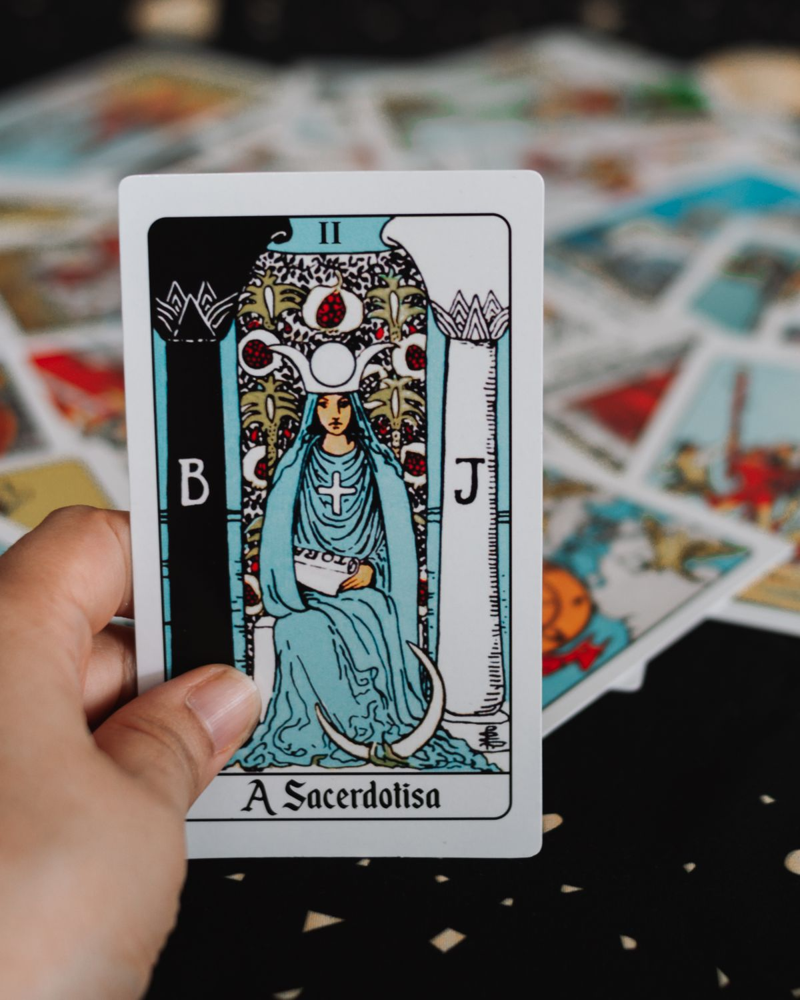
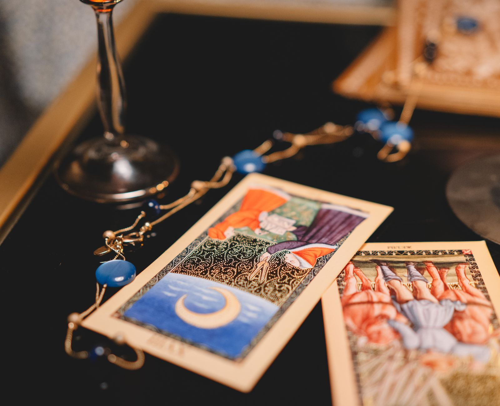
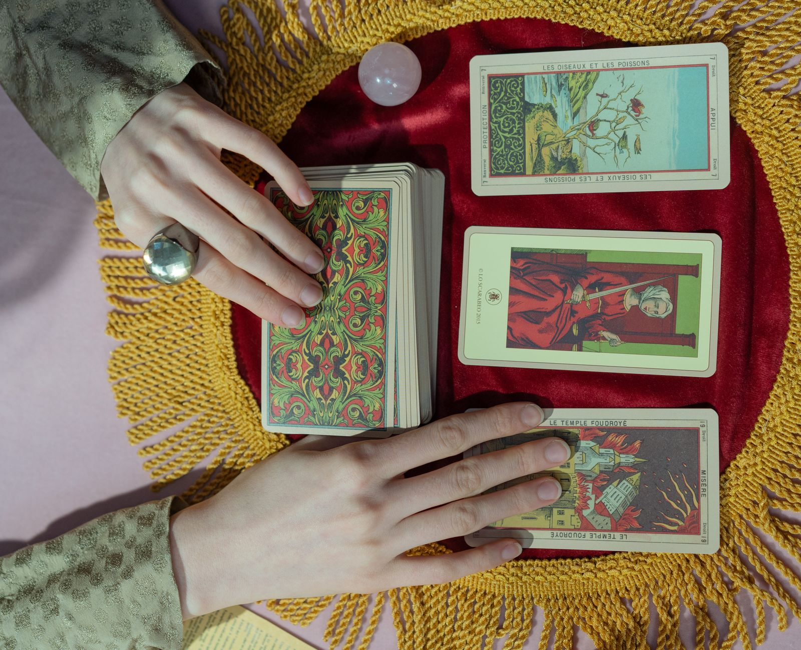
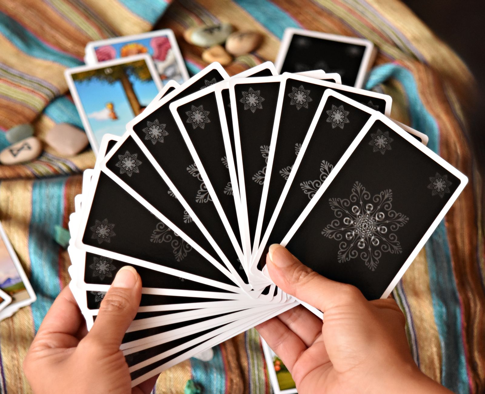

✦ Entre Cartas y Jose — Zona Norte
Cortá el mazo
y llevate claridad.
Un descenso por los arcanos. Lecturas honestas, sin humo.
✦ Entre Cartas y Jose — Zona Norte
Un descenso por los arcanos. Lecturas honestas, sin humo.
✦ El oficio
No te leo el destino. Te ayudo a leer lo que ya está pasando en tu vida.

I Lectura personal
Trabajo, vínculos, una decisión trabada. Salís con un paso concreto.

II Eventos sociales
Cumpleaños, casamientos, despedidas. Cada invitado se lleva su lectura.
III Corporativo
Activaciones, fin de año, team building. Rompe el hielo y da que hablar.
✦ Mi manera de leer
I Lo que ofrezco
Vos, yo y una pregunta. Trabajo, vínculos, una decisión que te tiene trabado. Salís con algo concreto para hacer, no con misterio.
Cumpleaños, casamientos, despedidas. Pongo una mesa de tarot y cada invitado se lleva su lectura. El toque que nadie se olvida.
Activaciones de marca, fin de año, team building. Una propuesta distinta que rompe el hielo y da que hablar en la oficina.

II Cómo es una sesión
Puede ser puntual o un "no sé por dónde arrancar". Las dos sirven.
Tirás las cartas y las leemos juntos, a tu ritmo, sin apuro.
Una lectura honesta y un paso concreto. Nada de finales cerrados.
III Sociales y corporativos
Una atracción que corta la noche y deja a todos hablando. Desde un cumpleaños íntimo hasta una activación de marca para cien personas: armo la propuesta según tu evento, tu público y tu horario.

IV Quién te va a leer
Hace años que leo tarot y todavía me sorprende lo mismo: la carta correcta aparece cuando la persona está lista para escucharla. Trabajo desde Zona Norte, presencial y online, con lecturas para vos y con mesas para tus eventos.
No te vendo destinos ni te asusto. Te acompaño a leer lo que ya está pasando y a decidir con más claridad. Sencillo, cálido y directo — como me gusta a mí.
Mirá mi Instagram✦ Es tu momento
Escribime y coordinamos tu lectura o tu evento en un mensaje.
+54 9 11 6569-2110Zona Norte, GBA · @entrecartasyjose